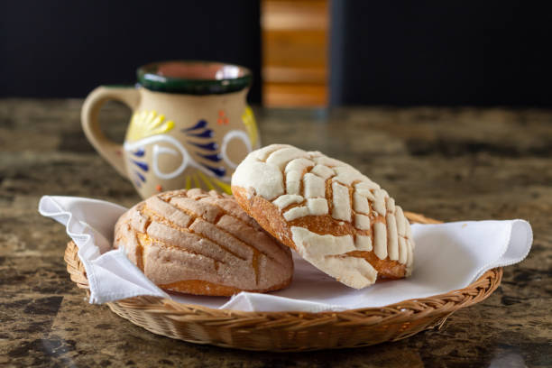
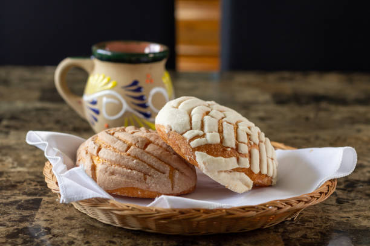
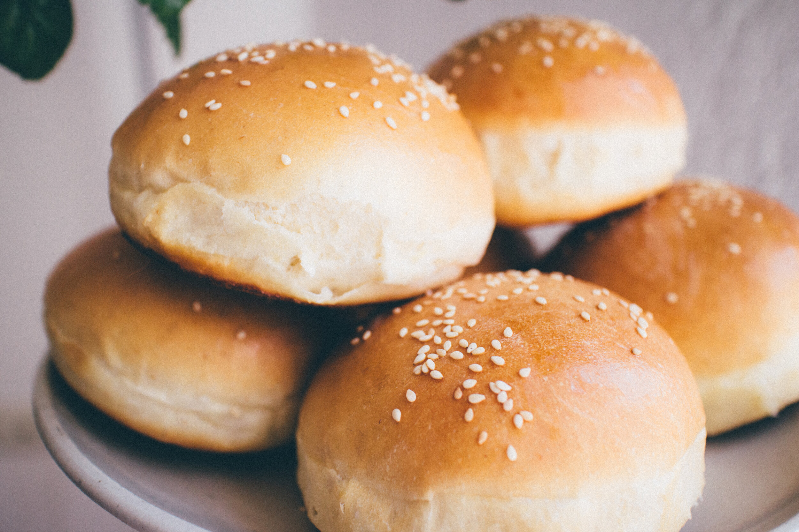
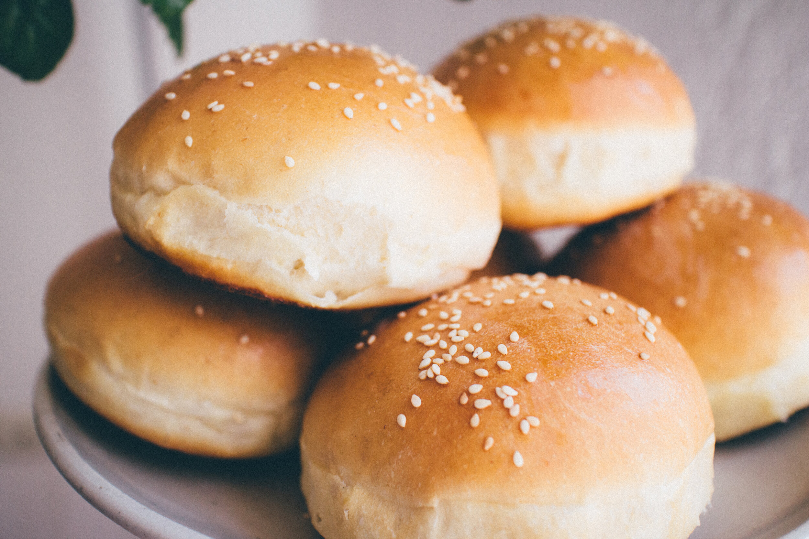

Bienvenidos a Panadería La Tradición
Desde 2018, Panadería La Tradición ha sido el corazón de nuestro barrio. Fundada por Don Manuel, esta panadería familiar ha pasado de generación en generación, manteniendo recetas artesanales, ingredientes de calidad y mucho amor por el pan.
Nos especializamos en conchas, bolillos, empanadas, pasteles y mucho más, siempre frescos y listos para compartir. Cada día, nuestra pasión es llevar el mejor sabor a tu mesa, conservando la tradición que nos caracteriza.
Nuestros Productos Destacados
Consulta la galería de imágenes y nuestros productos más populares.
Galería de Sabores
 


Contáctanos
üì± WhatsApp: +51 982362999
üìû Tel√©fono: +51 982362999
üìß Email: contacto@panaderialatradicion.com
üì∏ Instagram: @panaderialatradicion
üìò Facebook: Panader√≠a La Tradici√≥n
Lo que dicen nuestros clientes
“El mejor pan del pueblo, ¡como el de mi abuela!” – Carla M.
“Siempre calientito, siempre delicioso.” – Javier R.